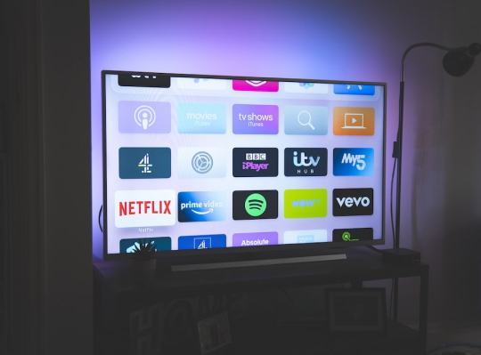

Настройка вещания всего за 4 шага

01
Зарегистрируйтесь
02
Возьмите бесплатный тест
03
Настройте просмотр
04
Продлевайте подписку
6 причин выбрать TVMAS TV
Попробовать бесплатно01
Доступная цена
У нас больше телеканалов чем у любых других конкурентов. По такой цене вы получите около 1000 телеканалов у наших конкурентов, а у нас более 4600.
02
Легкий старт
Вам потребуется 5-10 минут на настройку ТВ на вашем устройстве. Но есть и хорошая новость - у нас есть все необходимые инструкции, и служба техподдержки, готовая помочь!
03
В любой точке мира
Кроме того, что у нас представлены каналы разных стран - Германии, РФ, Израиля, Украины, Турции и других, их можно смотреть из любой страны мира онлайн.
04
Онлайн-Кинотеатр
Помимо телеканалов, у нас есть собственный онлайн-кинотеатр с тысячами фильмов и сериалов доступных 24\7 в HD и 4K. Это очень удобно, попробуйте!
05
Работает на вашем устройстве
У нас есть инструкции для подключения на смартфонах, компьютерах и конечно - Smart TV! Кроме этого, TVMAS TV можно смотреть на приставках на Android и iOS.
06
Архив - 7 дней
Все передачи на всех каналах сохраняются в нашем архиве на 7 дней. Вы можете просмотреть любую передачу или трансляцию, которая была в течение предыдущей недели.
Часто задаваемые вопросы
Не совсем понимаю, что собой представляет ваша услуга?
Мы предлагаем просмотр телевидения через интернет. Если у вас есть телевизор, подключенный к интернету, компьютер или телефон - вы сможете подключить наш сервис и смотреть более 4600 каналов (или иное количество, в зависимости от выбранных вами пакетов) в любое время.
Боюсь, что не смогу настроить.
Как-то пробовал, всё очень сложно.
Как-то пробовал, всё очень сложно.
Уверяем, в настройке нет ничего сложного, тем более, что делается она всего один раз. Мы предоставляем подробные пошаговые инструкции по подключению Антифриз ТВ на любое устройство. А если по ходу настройки у вас возникнут вопросы или затруднения - специалисты технической поддержки вам помогут. Это часть нашей работы, поэтому не стесняйтесь обращаться за помощью!
Возможно ли оплатить вашу услугу из Европы, США, Израиля?
Конечно. Время от времени у нас возникают затруднения с приемом платежей, но мы решаем такие вопросы в ручном режиме. Напишите в службу технической поддержки, мы сделаем всё возможное, чтобы найти для вас индивидуальное решение.
Не дороговато?
Качественная услуга всегда стоит дороже некачественной. У нас доступен тест на 72 часа, и если вы уже пользовались бесплатными или дешевыми сервисами IPTV - попробуйте и почувствуйте разницу. Кроме того, подпишитесь на нашу группу Вконтакте и Telegram-канал, мы часто выкладываем купоны на скидки.
Какой нужен интернет для просмотра IPTV?
У нас есть три типа каналов - SD (обычное качество), FULL HD (высокое качество) и Orig (Оригинальное качество, доступно в пакетах Premium и VIP)
Для SD каналов требуется скорость около 10 мбит/сек.
Для каналов в Full HD мы рекомендуем скорость не ниже 25 мбит/сек.
Для каналов из пакетов Premium и 4K рекомендуется не ниже 50 мбит/сек.
Для SD каналов требуется скорость около 10 мбит/сек.
Для каналов в Full HD мы рекомендуем скорость не ниже 25 мбит/сек.
Для каналов из пакетов Premium и 4K рекомендуется не ниже 50 мбит/сек.